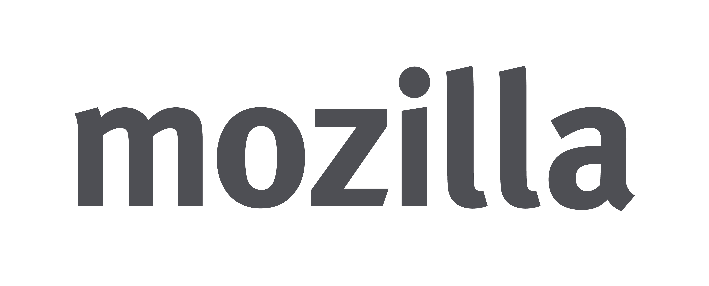

Firefox BM Test Day 2014, Universiti Teknologi Malaysia, Johor Bahru 16/03/2014
Mozilla Malaysia Community


What is Mozilla Localization?
Firefox Bahasa Malaysia??

TEST PILOT - Firefox BM (BETA)
Firefox OS Phone BM (BETA)
The web ride is far from over!